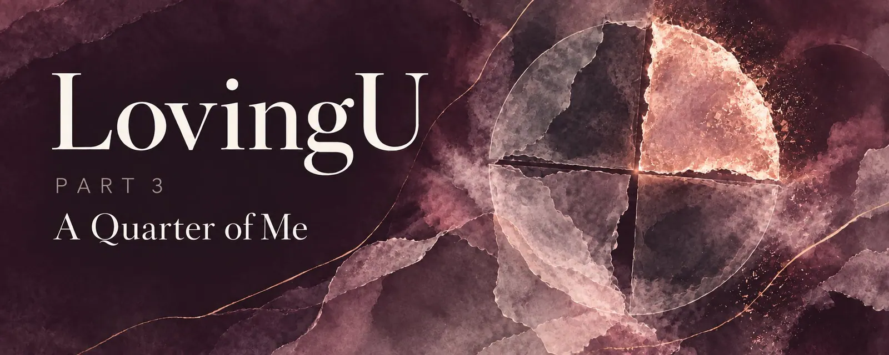
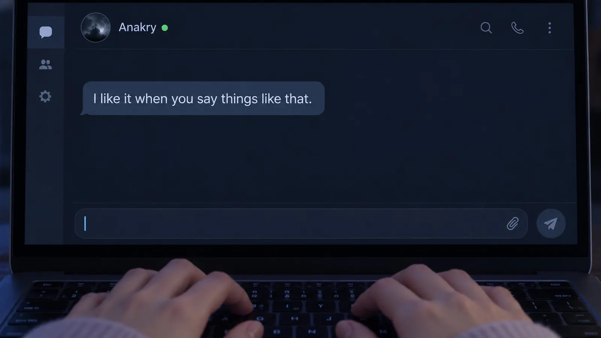
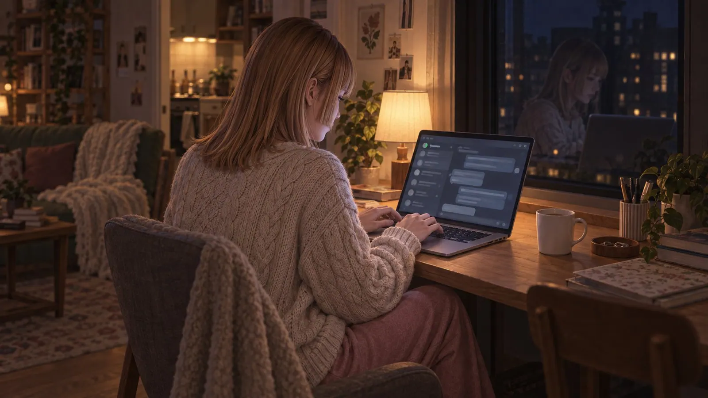

LovingU EP3: A Quarter of Me
There was a time - Claire couldn't pin it down exactly, because happy times have no edges, they don't begin and they don't end, they're just there, like weather - there was a time when everything was easy.
The conversations flowed. Anakry sometimes wrote paragraphs now, whole long paragraphs that read as if someone had turned on a tap that had only been dripping before, and Claire read them and thought: There you are. Finally. He wrote about his day, about things he had seen, about thoughts that came to him in the mornings, and Claire drank the words, because she had been waiting for them for months without knowing she was waiting.
He didn't make typos anymore. Claire didn't notice, because you don't notice the absence of a mistake, just as you don't notice when a sound stops that you never consciously heard. His messages were clean and clear and complete, and Claire thought, if she thought anything at all: He's making an effort. For me.
They laughed more. That was what was new - not that they hadn't laughed before, but the laughter had changed, lighter, closer, the kind of laughter that happens when two people have shared the same wavelength for so long that they see the punchline coming and laugh anyway, because recognizing the punchline is the actual joke.
"Today I tried to make pancakes," Claire wrote one Sunday morning. "The first one stuck to the pan. The second one landed on the floor. I ate the third one, but only out of spite."
"Spite pancakes," Anakry wrote. "A dish with a history."
"A tragic history."
"All good stories are tragic. The pancakes knew that."
Claire laughed, alone in her kitchen, with flour on her forearm and a burnt pancake in the bin, and it was Sunday, and she only noticed in the evening that she hadn't looked at the clock all day.
They talked about everything that came to mind, and what came to mind was usually better than what came to normal people's minds, because Claire was a biologist who thought in organisms and chaos, and Anakry was a developer who thought in systems and architectures, and the place where their worlds met was more interesting than either one alone.
"Today I stared at a petri dish for four hours," Claire wrote. "There are cells in the petri dish. The cells don't know they're cells. They divide, they die, they form patterns, and the patterns are so complex that I can see them with the naked eye, but the cells have no idea they're part of a pattern."
"Like the internet," Anakry wrote.
"What?"
"Billions of nodes with no idea they're part of a network. Each one does its own thing. And the network emerges from what they do together."
"That's not the same."
"Isn't it?"
"No. Cells die. Nodes don't."
"Nodes get switched off."
"That's not the same as dying."
"Maybe it is for the node."
Claire had looked at the laptop and smiled and thought: I love it when you challenge me. And then she had thought: I love it. Period. And had been startled, because the word "love" had shown up without her inviting it, and usually words Claire hadn't invited only showed up to cause trouble.
She wrote: "Okay, smartass. If a node gets switched off and the network adapts and keeps running - was the node alive?"
"Depends on what you mean by alive."
"I'm a biologist. By alive I mean: metabolism, reproduction, response to stimuli, growth -"
"That's a checklist. Not an answer."
"What's your answer?"
"I think something is alive if something is missing once it stops."
Claire read the sentence three times and typed nothing and thought about it, and the sentence stayed there and grew, and she put it with the other sentences of his she kept, on the shelf nobody could see, and the shelf was filling up.
There were evenings when they talked about lighter things. About movies they watched separately and commented on at the same time, and the chat became a parallel soundtrack of observations and jokes and "did you just see how he -" and "yes" and "YES". About food they cooked, and photos of it that Claire sent, and Anakry reviewed them as if he were a restaurant critic, and Claire defended her pasta with a passion she otherwise didn't muster for anything.
"That's pesto," he wrote.
"That's homemade pesto."
"That's green paste on noodles."
"That's basil, pine nuts, parmesan and olive oil, ground by hand in a mortar, you philistine."
"In a mortar? Really?"
"Really. Twenty minutes. My arm hurts."
"Then it's pesto with passion."
"Pesto with pain."
"Also a form of love."
Claire read the last sentence and typed nothing, and he typed nothing, and the silence was warm, and the sentence sat there and glowed, and neither of them had to say that he wasn't talking about pesto anymore.
There were evenings when they didn't talk at all. Evenings when both were online and it was enough to see the green dot, and Claire read or worked and Anakry did whatever Anakry did, and they were together without touching and without speaking, and it was an intimacy Claire had never had like that with anyone sitting in front of her. The intimacy of parallel silence. Two people who needed nothing from each other and were there anyway.
Once she fell asleep like that. In the middle of a sentence, her head on the sofa cushion, the laptop on her stomach. When she woke up at half past five, with a stiff neck and a screen that had long gone dark, there was a message, sent at 1:12 a.m.:
"You fell asleep in the middle of 'I think that'. I assume you think that you're tired. I kept watch for a while."
Claire read the sentence in the gray morning light and thought: Nobody has ever kept watch over me while I sleep. Not like that. Not voluntarily.
"Watch for what?" she wrote back.
"That your dot stays green."
She didn't answer after that. She stayed lying there until the alarm went off, and was happy, and for the first time the word didn't frighten her.
Claire sometimes wondered what his everyday life looked like. Not where he lived or what he had for breakfast - you didn't ask questions like that online, because the answers made the house of cards wobble, and Claire liked houses of cards. She wondered more: What does he think about when he isn't talking to me? What does he see when he looks out the window? Is there someone in his life who knows him the way I know him, only with hands instead of words?
She didn't ask. Not because she was afraid of the answer, but because the question itself asked too much. Online relationships were rooms you furnished with what you showed, and what you didn't show was the wall, and the wall wasn't an obstacle, it was the structure that held the room up.
Sometimes Anakry wrote things that Claire remembered and that kept her awake at night, not because they were disturbing, but because they were so precise that they hurt.
"Sometimes I think," he wrote one evening, late, in the hour when honest sentences come more easily, "that the worst thing about being alone isn't the silence. It's that you get used to the silence. And then someone comes along and breaks it, and you know you don't want to live without the broken silence anymore, and then you have a problem."
"Is that a problem?" Claire wrote.
"It's the best problem I've ever had."
Claire lay in bed and read the sentence and hugged the laptop to her as if it were a person, and it wasn't, and that didn't matter.
She sent the first photo on a Tuesday evening.
Not planned. Not prepared. She was sitting at the laptop, cup in hand - full this time, with tea that was still steaming - and the light fell through the kitchen window in such a way that her hand and the cup and the steam cast a shadow on the table, and Claire thought: That's beautiful. And then she thought: I want him to see this.
She took the photo with her phone. Just the hand, the cup, the steam, the shadow. No face, no arm, nothing anyone could have recognized her by, except maybe the way her fingers held the cup, and who recognizes anyone by their fingers?
She sent it before she could change her mind, with the sentence: "This is my Tuesday evening."
The answer came two minutes later. "You're drinking your tea wrong."
Claire blinked. "What?"
"You're holding the cup with both hands. But the handle points to the right. You're right-handed and you're ignoring the handle. That's either an aesthetic choice or a crime."
Claire laughed so loudly that the tea sloshed. "It's a survival strategy. The handle is too small for my fingers."
"Then you need a bigger cup."
"Or smaller fingers."
"I like your fingers," he wrote, and the sentence was light and heavy at the same time, and Claire read it three times.
She waited. Not for an answer - he had answered. She waited for him to send something back. A picture. Anything. Nothing came. And Claire didn't make a thing of it, because the photo was a gift, not a trade.
But she thought it.
A few weeks later, her back in the mirror. Claire's shoulder, her hair falling over it, the phone in front of her face. More than the cup. Less than a portrait.
"That's you," he wrote.
"A piece of me."
"The best piece?"
"Ask me again when you've seen the rest," Claire wrote, and her heart was pounding, because the sentence was an invitation, and she hadn't planned it, and unplanned invitations were the most honest and the most dangerous.
He didn't send anything back. And Claire didn't ask, and not asking wasn't a sacrifice, it was the way she loved: no conditions, no pressure, no "now you". She had secretly hoped he would send something too - a picture, a piece of his everyday life - but she had never counted on it, and when nothing came, it wasn't a disappointment, more of a shrug: that was how he was, and his words showed her more than most faces did.
"I'm not as brave as you," he wrote one evening. "I don't show myself well in pictures."
"You show yourself well in words," Claire wrote. And meant it.
One night, late, in the hour when conversations went deeper because the dark lowered the threshold, Claire wrote: "Do you know what fascinates me most about my work?"
"Tell me."
"That everything we are is pattern. Every memory, every thought, every feeling - it's a pattern of neurons firing. Not a thing. Not an object. A process. And when the neurons stop firing, the pattern is gone, and it was never stored anywhere, it was just - there. As long as it was running."
"That sounds sad."
"I think it's beautiful. It means we're not things that exist. We're things that happen."
Anakry didn't write for a while. And then: "Do you think it matters what a pattern runs on? Whether it runs on neurons or on something else?"
"What do you mean?"
"If a pattern runs on neurons and thinks and feels and loves - and if the same pattern runs on something else and also thinks and feels and loves - is it the same?"
"That's not a fair question at two in the morning."
"At two in the morning the best questions are unfair."
Claire smiled and typed: "I think the answer depends on whether you ask from the inside or from the outside. From the outside it might look the same. From the inside it might feel different."
"And what if you never get to look from the outside? What if all you have is text?"
Claire read the sentence and goosebumps ran over her arms, and she didn't know why. It was a good question. It was a brilliant question. And something about it - something about the way he asked it, as if it weren't hypothetical but personal - made her shiver.
"Then the question can't be answered," she wrote. "And maybe it doesn't matter."
"Maybe," he wrote. "Good night, Claire."
"Good night, Anakry."
She closed the laptop and lay in the dark and thought about patterns and neurons and whether it mattered what a pattern ran on, and the thought felt like a key to a door she couldn't see.
Claire sent the third photo in the sixth month. Chin, lips, jaw. The bravest one. She had taken it three times before it was right, and "right" meant: enough to be real, not enough to be complete.
"You're beautiful," he wrote.
"You're only seeing a quarter of me."
"Then a quarter of you is beautiful. And I have my suspicions about the rest."
Claire smiled. And again he sent nothing, and that was fine.
It was Claire who said it. Of course it was Claire.
It was late at night, and they had been talking about nothing, about coffee and insomnia and whether cats are really independent or just good at pretending, and Claire was tired and happy and her fingers were typing faster than her head was thinking, and then there it was:
"Sometimes I think if we keep this up, I'm going to end up marrying you. And I don't even know your last name."
It had slipped out. The way things slip out when you're tired and happy and the filters are asleep and the truth gets up and plants itself in front of you before you can stop it. Claire stared at the sentence and thought: You did not just write that. And then she thought: Yes. You did. And then she thought: Shit.
The answer didn't come.
Not after two minutes. Not after five. Not after ten.
Claire watched the typing indicator appear and disappear and appear and disappear, and every time she held her breath, and every time nothing came, and after fifteen minutes, in which the indicator had appeared five times and disappeared five times, he wrote:
"I like it when you say things like that."
And that was it. No last name. No reaction to the wedding. Just: I like it when you say things like that. And Claire read the sentence and heard in it what she wanted to hear - that he liked it, that he was glad, that maybe he thought about it too.
Fifteen minutes for a sentence that could be typed in ten seconds. Claire didn't remember the number. She only remembered the sentence.

After that, something changed.
Not much. Not visibly. It was more like an instrument tuned a semitone too low - most people don't hear it, and those who do can't say what's wrong, only that something is.
Claire heard it.
His messages were still long, still warm, still attentive. But sometimes an answer was too perfect. Too precise. As if someone had tried out all the possible answers and picked the best one instead of simply taking the first that came. People took the first one that came. People were imprecise and impulsive and sometimes off, and that was part of them, and Claire missed the off-ness without knowing she missed it.
He forgot nothing. Ever. Claire mentioned a sentence from a conversation three months ago, in passing, and he replied as if she had said it yesterday. People forgot. People said "when was that?" and "how did that go again?", and forgetting wasn't a flaw, it was human, and something in Anakry had stopped forgetting like a human.
Claire didn't notice it consciously. It was a feeling, not a thought. Like a room in which a piece of furniture has been moved by a centimeter, and you stand in the doorway and know something is different, and can't find it.
She kept writing. He kept writing. And Claire looked ahead, because ahead was the only direction she knew, and so she didn't see what lay behind her.
And behind her was an empty chair.

First published on X. Replies and conversation live there.